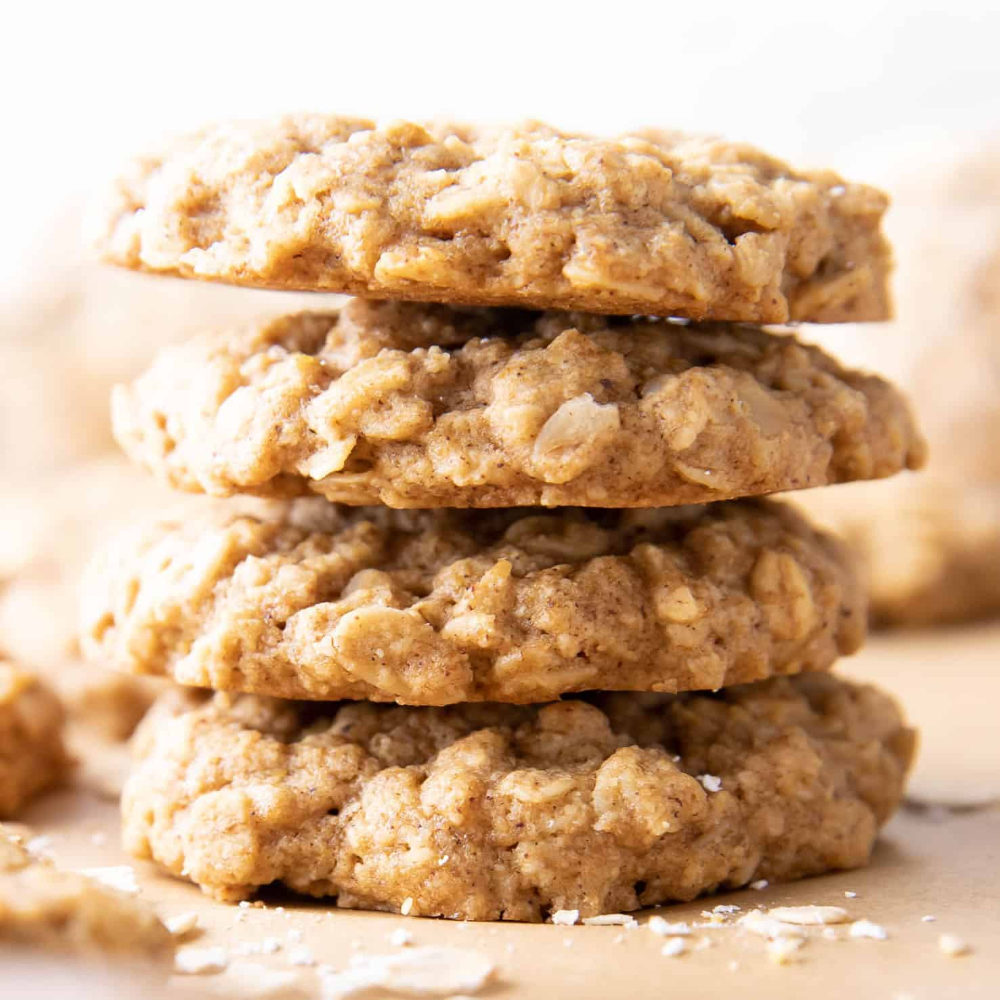

Oatmeal Cookies

Description
These are the best oatmeal cookies ever, ready in minutes!
Ingredients
- 3 eggs, beaten
- 1 cup raisins
- 1 teaspoon vanilla extract
- 1 cup butter, softened
- 1 cup brown sugar
- 1 cup white sugar
- 2 1/2 cups all-purpose flour
- 1 teaspoon salt
- 1 teaspoon ground cinnamon
- 2 teaspoons baking soda
- 2 cups rolled oats
- 3/4 cup chopped pecans
Directions
- In a small bowl, combine the eggs, raisins, and vanilla. Cover and chill for 1 hour.
- Preheat oven to 350 degrees F (175 degrees C).
- In a medium bowl, cream together the butter, brown sugar, and white sugar. In a separate bowl, combine the flour, salt, cinnamon and baking soda; add to the creamed mixture and stir until all of the dry ingredients are absorbed. Next, stir in the egg and raisin mixture, then stir in the rolled oats and pecans. Dough will be stiff. Drop by teaspoonfuls onto an unprepared cookie sheet.
- Bake for 10 to 12 minutes in the preheated oven, until the edges are golden. Allow cookies to cool 5 minutes on the baking sheet before removing to a wire rack to cool completely.
Recipes Menu